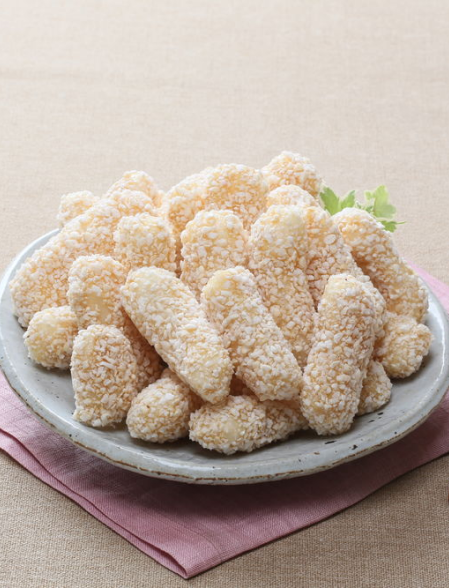

'생산자에게는 생활을,소비자에게는 생명을’
한살림 핵심가치를바탕으로경제성과효율성을 따르기보다는 욕심내지않고
할걸음 한걸음씩 성장해 왔습니다.
미감다과의 정신적 가치
친환경 먹거리 생산을 단순히 많이 생산해서
많은 이윤을 창출하는 도구로 생각하지않습니다.
미감다과는 결과물이 아닌 과정을 더욱 중요하게
생각합니다.
친환경 먹거리 생산을 단순히 많이 생산해서
많은 이윤을 창출하는 도구로 생각하지않습니다.
미감다과는 결과물이 아닌 과정을 더욱 중요하게
생각합니다.
Healthy food
미감다과의 원료로 만들어진 친환경인 먹거리
- 